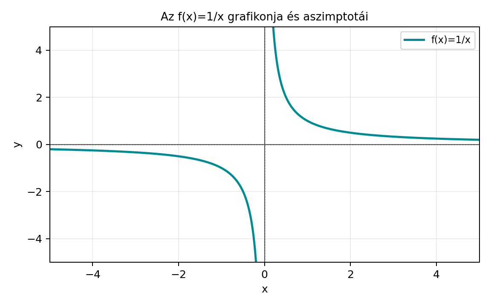

8.3 Végtelenben vett és végtelen
határérték, aszimptoták
8.3.1 Motiváció
A fizikai világban sok folyamat nem ér véget egy adott időpontban,
hanem egyre közelebb kerül egy határállapothoz: a kondenzátor
feszültsége a tápfeszültséghez tart, a hűlő kávé hőmérséklete a
szobahőmérséklethez, az ejtőernyős sebessége egy maximális
határsebességhez. Ezt a „megközelítést” a végtelenben vett határérték
írja le. Ugyanakkor sok függvény grafikonja egy-egy egyeneshez simul
hozzá – ezek az aszimptoták –, és ezek meghatározása elengedhetetlen a
függvények pontos ábrázolásához. Ebben az alfejezetben a végtelenben
vett határértéket, a függvény végtelenbe tartását és a három
aszimptotatípust vezetjük be.
8.3.2 Szemléletes kép
Nézzük az
függvényt. Ha
nagyon nagy, az értéke nagyon kicsi, de pozitív; ha
nagyon kicsi pozitív, az értéke nagyon nagy. A grafikon a két
koordinátatengelyhez simul:

Az f(x)=1/x grafikonja és aszimptotái - A
grafikon közeledik az x tengelyhez (y=0), ha |x| nagy, és az y
tengelyhez (x=0), ha x közelít 0-hoz.
Az ábra a következőt mutatja: a
egyenes vízszintes aszimptota, mert
és
.
Az
egyenes függőleges aszimptota, mert jobbról közelítve
,
balról közelítve pedig
.
8.3.3 Definíciók: végtelenben vett
és végtelen határérték
A véges pontban vett határértékhez hasonlóan a „küszöbindexes”
definíciót használjuk, de most a bemenetet növeljük korlátlanul.
Definíció (véges határérték a végtelenben). Legyen
olyan függvény, amely valamely
intervallumon értelmezve van. Azt mondjuk, hogy
határértéke a végtelenben
,
ha minden
számhoz létezik olyan
küszöb, hogy ha
,
akkor
.
Jelölés:
.
Megjegyzés. Hasonlóan definiáljuk a mínusz
végtelenben vett határértéket:
,
ha minden
-hoz
létezik
,
hogy ha
,
akkor
.
Definíció (végtelenbe tartó függvény határértéke).
Legyen
az
pont valamely átszúrt környezetében értelmezett. Azt mondjuk, hogy
,
ha minden
számhoz létezik
,
hogy ha
,
akkor
.
Hasonlóan értelmezzük a
határértéket, valamint az egyoldali végtelen határértékeket: például
,
ha minden
-hez
létezik
,
hogy ha
,
akkor
.
Definíció (végtelen határérték a végtelenben).
Legyen
valamely
intervallumon értelmezve. Azt mondjuk, hogy
,
ha minden
számhoz létezik
,
hogy ha
,
akkor
;
és
,
ha minden
-hez
létezik
,
hogy ha
,
akkor
.
A
-ben
hasonlóan értelmezzük: például
,
ha minden
-hez
létezik
,
hogy ha
,
akkor
.
Figyelem. A
nem valós szám, ezért a végtelen határértéknél nem mondjuk, hogy a
függvény „tart a végtelenhez” mint számhoz. A definíció azt fejezi ki,
hogy a függvény értéke minden előre megadott korlátot meghalad, ha a
bemenet elég közel van a vizsgált ponthoz.
Definíció (aszimptota).
A
egyenletű egyenes a függvény vízszintes aszimptotája,
ha
vagy
.
Az
egyenletű egyenes a függvény függőleges aszimptotája,
ha
vagy
.
Az
egyenletű egyenes
()
a függvény ferde aszimptotája, ha
vagy
.
Ha az
képletben
,
a vízszintes aszimptotát kapjuk; ezért a ferde aszimptotánál
-t
kötünk ki. A ferde aszimptota meredekségét és tengelymetszetét a
következő határértékek adják (ha a függvénynek van ferde aszimptotája a
végtelenben):
és ugyanez igaz
esetén is. Ha
véges és nem nulla, és
is véges, akkor létezik ferde aszimptota.
8.3.4 Kidolgozott példák
8.3.4.1 1. példa: racionális
függvény a végtelenben
Számítsuk ki a
határértéket.
Lépések. A legmagasabb fokú tag dominál, ezért
osszuk el a számlálót és a nevezőt is az
taggal (a nevező legmagasabb foka szerint). Mivel
a határátmenet során, ez megtehető:
Ellenőrzés. Ha
,
a tört körülbelül
,
ami közel van
-höz.
8.3.4.2 2. példa: végtelenbe tartó
határérték és függőleges aszimptota
Tekintsük az
függvényt.
Jobb oldali határérték az
pontban: ha
,
akkor
pozitív és nagyon kicsi, tehát a tört nagy pozitív szám. Ezért
.
Bal oldali határérték: ha
,
akkor
negatív és nagyon kicsi abszolút értékű, tehát a tört nagy negatív szám.
Ezért
.
Mivel legalább az egyik oldali határérték végtelen, az
egyenes függőleges aszimptota. A végtelenben pedig
és
,
tehát
vízszintes aszimptota.
8.3.4.3 3. példa: ferde aszimptota
meghatározása
Határozzuk meg az
függvény aszimptotáit.
Függőleges aszimptota. A nevező zérushelye
,
és itt a számláló nem nulla, tehát függőleges aszimptota:
,
.
Végtelenben. A számláló fokszáma 2, a nevezőé 1,
tehát nincs vízszintes aszimptota, de lehet ferde. Polinomosztást
végzünk:
,
tehát
A maradéktag
,
ezért az
egyenes ferde aszimptota. Ellenőrzés a meredekség és tengelymetszet
képletével:
és
Tehát a ferde aszimptota
.
Az alábbi ábra a függvényt és két aszimptotáját mutatja közelről és
kizoomolva. Az
eltérés
-nál
,
-nél
(),
-nél
;
nagy
-re
a görbe rásimul az egyenesre.
Statikus változat (mint a PDF-ben)
és aszimptotái; számított értékek
8.3.5 Tétel: domináns tag elve
racionális függvényekre
Tétel (domináns tag elve). Legyen
és
két polinom, ahol
és
.
Ekkor
A
esetben a határérték előjelét a legmagasabb fokú tagok hányadosának
előjele adja: ha
,
akkor
,
ha
,
akkor
.
Ugyanez igaz
esetén is, de ott a hatványok paritásától függ az előjel.
Bizonyítás vázlat. Emeljünk ki a számlálóból
-et,
a nevezőből
-et:
Amikor
,
a zárójeles kifejezések a
-hez
és
-hez
tartanak (mert minden
tag nullához tart). Így a szorzat határértéke
viselkedését követi:
ha
,
akkor
,
így a szorzat
-hoz
tart;
ha
,
akkor
,
így a határérték
;
ha
,
akkor
,
és az előjel a
előjelétől függ; ha negatív, a határérték
.
∎
8.3.6 Számolási recept: aszimptoták
meghatározása
Függőleges aszimptoták. Keresd meg azokat a
pontokat, ahol a függvény nem értelmezett, de a közelében értelmezett
(tipikusan a nevező zérushelyei, ha a tört egyszerűsítés után is ott
marad). Minden ilyen
pontban számítsd ki az egyoldali határértékeket; ha legalább az egyik
vagy
,
akkor
függőleges aszimptota.
Végtelenbeli viselkedés. Számítsd ki
és
értékét. Ha valamelyik véges
,
akkor
vízszintes aszimptota.
Ferde aszimptota (ha nincs vízszintes). Ha a
függvény „polinom/racionális” típusú, és a számláló fokszáma pontosan
1-gyel nagyobb a nevezőénél, akkor ferde aszimptota várható. Számítsd
ki:
és ugyanezt
-re
is. Ha
és
véges és
,
akkor
ferde aszimptota.
Ellenőrzés. Ábrázold a függvényt és az
aszimptotákat, és ellenőrizd, hogy nagy
-re
a függvény valóban az aszimptotához simul.
8.3.7 Valós életbeli alkalmazás:
kondenzátor töltődése
Egy soros RC-körben a kondenzátor feszültsége a bekapcsolás után az
függvény szerint változik, ahol
a tápfeszültség,
az ellenállás,
a kapacitás, és
az idő.
Modell és számítás. Legyen
,
,
.
Az időállandó
.
Ekkor
A végtelenben vett határérték:
Tehát a függvénynek a
egyenes vízszintes aszimptotája. A gyakorlatban
után a feszültség
ami a tápfeszültség körülbelül
-a.
A mérési pontosságon belül ilyenkor már „beállt” a feszültség.
Értelmezés és a modell korlátai. A modell azt
mondja, hogy a kondenzátor feszültsége aszimptotikusan közelít a
tápfeszültséghez, de elméletben soha nem éri el pontosan. A valóságban a
kondenzátor szivárgási árama, a tápegység belső ellenállása és az elemek
nem idealitása miatt a folyamat kissé eltér, de a mérnöki gyakorlatban
az exponenciális közelítés kiválóan használható.
8.3.8 Tipikus hibák
A függőleges aszimptota megállapítása anélkül, hogy a
számlálót is vizsgálnánk. Például az
függvénynél a nevező zérushelye
és
,
de a számláló
-nél
szintén nulla, és a tört egyszerűsíthető:
,
ha
.
Ezért
nem függőleges aszimptota, hanem megszüntethető szakadás. Helyes:
először egyszerűsítsünk, és csak azután keressünk
aszimptotákat.
A ferde aszimptota elfelejtése, ha a számláló fokszáma
1-gyel nagyobb a nevezőénél. Sok diák csak vízszintes
aszimptotát keres, és ha nincs, azt hiszi, hogy a függvénynek nincs
aszimptotája. Pedig például az
függvénynek ferde aszimptotája van. Mindig ellenőrizzük a
fokszámokat.
A végtelen határértékeknél az előjel
elhanyagolása. Például
,
de
.
Ha csak azt írjuk, hogy
,
az pontatlan, mert az egyoldali határértékek különbözők, és a kétoldali
határérték nem létezik.
8.3.9 Önellenőrzés
Igaz vagy hamis? Ha
,
akkor a
egyenes vízszintes aszimptota. (Indokold röviden.)
Mi a
határérték?
Az
függvénynek milyen aszimptotái vannak?
Írd fel az
esetén a ferde aszimptota
és
paramétereit meghatározó határértékeket!
Igaz vagy hamis? Ha
racionális függvény és a nevező fokszáma nagyobb a számláló fokszámánál,
akkor a függvénynek nincs függőleges aszimptotája.
8.3.10 Feladatok
1. feladat (A). Számítsd ki a következő
határértéket:
2. feladat (A). Határozd meg az
függvény függőleges és vízszintes aszimptotáját.
3. feladat (B). Számítsd ki:
Add meg az utóbbi előjelét is.
4. feladat (B). Határozd meg az
függvény ferde aszimptotáját.
5. feladat (C). A definíció alapján bizonyítsd be,
hogy
.
6. feladat (D). Egy ejtőernyős sebességét közelítő
modell szerint
ahol a határsebesség
és
.
Mennyi a sebesség határértéke, ha
?
Mennyi idő alatt éri el a határsebesség
-át?
Értelmezd az aszimptotát a modellben.
8.3.11 Megoldások
Önellenőrzés – válaszok
Igaz. Ha a függvény határértéke a végtelenben 3, akkor a grafikon
nagy
-re
tetszőlegesen közel kerül a
egyeneshez, tehát az vízszintes aszimptota.
A legmagasabb fokú tag dominál: a számláló fokszáma 3, a nevezőé 2,
tehát a tört
-ben
úgy viselkedik, mint
,
ami
-hez
tart (mert
negatív és
pozitív). Tehát a határérték
.
Függőleges aszimptota:
,
mert ott a nevező nulla, a számláló nem. Vízszintes aszimptota: a
fokszámok egyenlők, a domináns tagok hányadosa
,
tehát
.
és
.
Hamis. A függőleges aszimptota a nevező zérushelyeinél keletkezik,
függetlenül a fokszámok viszonyától. Például
esetén a nevező fokszáma nagyobb, mégis van függőleges aszimptota
-nél.
1. feladat megoldása. Osszuk el a számlálót és a
nevezőt
-nel:
Mivel
,
,
,
a határérték
.
2. feladat megoldása. Függőleges: a nevező
zérushelye
,
a számláló ott
,
tehát
függőleges aszimptota. Vízszintes: a fokszámok egyenlők, a domináns
tagok hányadosa
,
tehát
vízszintes aszimptota.
3. feladat megoldása. Első: osszuk el
-tel:
Második: ha
,
akkor
és
,
tehát a tört
-hez
tart.
4. feladat megoldása. Polinomosztás:
,
tehát
.
A maradéktag nullához tart, így a ferde aszimptota
.
Ellenőrzés képlettel:
,
és
.
5. feladat megoldása. Legyen
tetszőleges. Olyan
-et
keresünk, amelyre
esetén
.
Mivel
,
ez
,
azaz
.
Válasszuk
értéket. Ekkor ha
,
akkor
,
tehát a definíció teljesül. ∎
6. feladat megoldása. A határsebesség:
Tehát a
egyenes vízszintes aszimptota. A
eléréséhez megoldjuk:
Tehát körülbelül 15 másodperc alatt éri
el a határsebesség 95%-át. Az aszimptota azt fejezi ki, hogy az
ejtőernyős sebessége elméletben soha nem lépi túl az 50 m/s-ot, csak
egyre jobban megközelíti.
A végtelenben vett határérték azt adja meg, hogy a függvény értéke
milyen számhoz tetszőlegesen közel kerül, ha a bemenet minden határon
túl nő:
,
ha minden
-hoz
van
,
hogy
esetén
.
A végtelenbe tartó függvény határértéke
azt jelenti, hogy a függvény értéke minden
korlátot meghalad, ha
elég közel van
-hoz.
Hasonlóan
azt jelenti, hogy minden
-hez
van
,
hogy
esetén
.
Az aszimptoták a grafikonhoz simuló egyenesek: a vízszintes
aszimptota
,
ha
;
a függőleges aszimptota
,
ha valamelyik egyoldali határérték
;
a ferde aszimptota
,
ahol
és
,
és
.
Racionális függvényeknél a domináns tag elve: ha a számláló fokszáma
kisebb, a határérték 0; ha egyenlő, a vezető együtthatók hányadosa; ha
nagyobb, akkor
.
Az aszimptoták meghatározása elengedhetetlen a függvényvizsgálatnál és a
modellek kvalitatív elemzésénél.